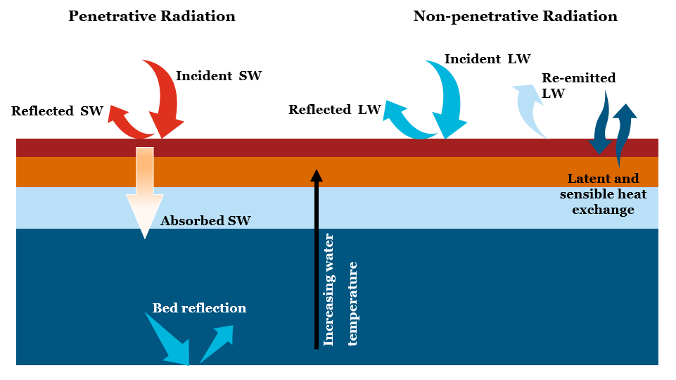

B.5 Atmospheric Heat Exchange
TUFLOW FV offers a range of options for specifying and calculating atmospheric heat exchange, and thus water temperature. These options are described in Section 7.7. The associated equations are presented here, in a manner that is aligned with the arrangement of content in that section. A supporting conceptual diagram of relevant radiation fluxes is presented in

Figure B.2: Atmospheric Heat Exchange Conceptual Diagram
B.5.1 Shortwave Radiation
B.5.1.1 Jacquet
Incident shortwave radiation is estimated according to Jacquet (1983) as follows.
1. Compute albedo
\[\begin{equation} \alpha_\phi=\alpha+0.02sin\left(\frac{2\pi\times\mathrm{day}}{365}\pm\frac{\pi}{2}\right) \tag{B.49} \end{equation}\]
where:
- \(\alpha_\phi\) [-] is the albedo corrected for latitude
- \(\alpha\) [-] is the user specified (or default) albedo without latitudinal correction
- day [-] is the day of year
- \(\pm\) is positive and negative for northern and southern latitudes, respectively
2. Compute incident shortwave radiation
\[\begin{equation} SW_i=\left(1.0-\alpha_\phi\right)\times SW \tag{B.50} \end{equation}\]
where:
- \(SW_i\) [W/m2] is the surface shortwave radiation corrected for albedo and applied to the water surface
- \(\alpha_\phi\) [-] is the albedo corrected for latitude
- \(SW\) [W/m2] is the user specified incoming shortwave radiation
B.5.1.2 Zillman
Incident shortwave radiation is estimated according to Zillman & Commonwealth Bureau of Meteorology (Australia) (1972) and Reed (1977) as follows.
1. Compute solar beam irradiance \(\operatorname{S}_e\) [W/m2] based on month (where day is day of year, corrected for leap years as required)
\[\begin{equation} \begin{aligned} \operatorname{S}_e&=-0.2\times\left(day-1\right)+1426 &&&&&& \text{January} \\\\ \operatorname{S}_e&=-\frac{17}{27}\times\left(day-1\right)+1420 &&&&&& \text{February} \\\\ \operatorname{S}_e&=-\frac{23}{30}\times\left(day-1\right)+1403 &&&&&& \text{March} \\\\ \operatorname{S}_e&=-\frac{23}{30}\times\left(day-1\right)+1380 &&&&&& \text{April} \\\\ \operatorname{S}_e&=-\frac{20}{30}\times\left(day-1\right)+1360 &&&&&& \text{May} \\\\ \operatorname{S}_e&=-\frac{5}{29}\times\left(day-1\right)+1340 &&&&&& \text{June} \\\\ \operatorname{S}_e&=-\frac{5}{30}\times\left(day-1\right)+1335 &&&&&& \text{July} \\\\ \operatorname{S}_e&=1380 &&&&&& \text{August} \\\\ \operatorname{S}_e&=1380 &&&&&& \text{September} \\\\ \operatorname{S}_e&=-\frac{22}{30}\times\left(day-1\right)+1380 &&&&&& \text{October} \\\\ \operatorname{S}_e&=-\frac{20}{29}\times\left(day-1\right)+1400 &&&&&& \text{November} \\\\ \operatorname{S}_e7&=-\frac{6}{30}\times\left(day-1\right)+1420 &&&&&& \text{December} \\\\ \end{aligned} \tag{B.51} \end{equation}\]
2. Compute declination
\[\begin{equation} h=\frac{180}{\pi}\arcsin{\left(\sin{\left(\frac{\mathrm{lat}\times\pi}{180}\right)}\times\sin{\Delta}+\cos{\left(\frac{\mathrm{lat}\times\pi}{180}\right)}\times\cos{\Delta}\times\cos{\pi\left(\frac{\mathrm{time}-12}{12}\right)}\right)} \tag{B.52} \end{equation}\]
- where:
- h [degrees] is the declination
- lat [-] is latitude
- time [hrs] is time of day
and: \[\begin{equation} \begin{aligned} \Delta=6.918\times{10}^{-3}+0.0257\sin{\left(\beta\right)}-3.99912\times{10}^{-1}\cos{\left(\beta\right)}+&9.07\times{10}^{-4}\sin{\left(2\beta\right)} \\\\ -6.758\times{10}^{-3}\cos{\left(2\beta\right)}-1.48\times{10}^{-3}\times\sin{\left(3\beta\right)}-&2.697\times{10}^{-3}\cos{\left(3\beta\right)} \end{aligned} \tag{B.53} \end{equation}\]
and: \[\begin{equation} \beta=\frac{2\pi\times\mathrm{day}}{\mathrm{year}} \tag{B.54} \end{equation}\]
- where:
- day [-] is the day of year
- year [-] is the number of days in the year, which is either 365 or 366
3. Compute clear sky shortwave radiation without latitudinal correction
\[\begin{equation} SW_{cs}=\frac{\operatorname{S}_e\times\Gamma^2}{\left(\left(\Gamma+\ 2.7\right)\times{10}^{-5}\ \times P\ +\ 1.085\times\Gamma+0.1\right)} \tag{B.55} \end{equation}\]
- where:
\(SW_{cs}\) [W/m2] is the clear sky shortwave radiation without latitudinal correction
\(\operatorname{S}_e\) [W/m2] is the solar beam irradiance computed as above
\(\Gamma\) [-] is \[\begin{equation} \left(\sin{\left(\frac{\mathrm{lat}\times\pi}{180}\right)}\times\sin{\Delta}+\cos{\left(\frac{\mathrm{lat}\times\pi}{180}\right)}\times\cos{\Delta}\times\cos{\pi\left(\frac{\mathrm{time}-12}{12}\right)}\right) \tag{B.56} \end{equation}\]
\(P\) [Pa] is the vapour pressure: \[\begin{equation} P=\frac{\operatorname{RH}}{100}\ \times SVP \tag{B.57} \end{equation}\]
- where:
\(RH\) [%] is the user specified relative humidity
\(SVP\) [Pa] is the standard vapour pressure: \[\begin{equation} SVP=100\times\operatorname{e}^{\left(2.3026\times\left(\frac{7.5\operatorname{T}}{T+237.3}+0.758\right)\right)} \tag{B.58} \end{equation}\]
\(T\) [C] is air temperature
4. Compute cloud cover correction if more than 25% cloud cover is present
\[\begin{equation} SW_{cc}=SW_{cs}\times\left(1-0.62CC+1.9\times{10}^{-3}\operatorname{H}_n\right) \tag{B.59} \end{equation}\]
- where:
- \(SW_{cc}\) [W/m2] is the cloudy sky shortwave radiation without latitudinal correction
- \(SW_{cs}\) [W/m2] is the clear sky shortwave radiation without latitudinal correction
- \(CC\) [-] is the user defined fractional cloud cover
- \(\operatorname{H}_n\) [-] is: \[\begin{equation} \left(\sin{\left(\frac{\mathrm{lat}\times\pi}{180}\right)}\times\sin{\Delta}+\cos{\left(\frac{\mathrm{lat}\times\pi}{180}\right)}\times\cos{\Delta}\right) \tag{B.60} \end{equation}\]
- \(SW_{cc}\) [W/m2] is set to be equal to \(SW_{cs}\) if less than 25% cloud cover is present
5. Look up albedo \(\alpha_\phi\) from Zillman & Commonwealth Bureau of Meteorology (Australia) (1972) table using cloud cover (converted to octants by TUFLOW FV) and declination h computed above.
6. Compute incident shortwave radiation \[\begin{equation} SW_i=\left(1.0-\alpha_\phi\right)\times SW_{cc} \tag{B.60} \end{equation}\]
- where:
- \(SW_i\) [W/m2] is the surface shortwave radiation corrected for albedo and latitude and applied to the water surface
- \(\alpha_\phi\) [-] is the albedo from Zillman (1972) as above
- \(SW_{cc}\) [W/m2] is the computed incoming shortwave radiation allowing for cloud cover computed as above
B.5.2 Longwave Radiation
B.5.2.2 Incident (Direct)
Net longwave radiation is computed as follows.
1. Compute incident longwave radiation \[\begin{equation} LW_i=LW\times\left(1-\alpha\right) \tag{B.61} \end{equation}\]
- where:
- \(LW_i\) [W/m2] is the incident longwave radiation corrected for albedo
- \(LW\) [W/m2] is the user specified incoming longwave radiation
- \(\alpha\) [-] is the longwave radiation albedo
2. Compute outgoing longwave radiation emitted at the water surface \[\begin{equation} LW_o=\epsilon_w\times\sigma\times\left(\operatorname{T}_w+273.15\right)^4 \tag{B.62} \end{equation}\]
- where:
- \(LW_o\) [W/m2] is the outgoing longwave radiation emitted at the water surface
- \(\epsilon_w\) [-] is the emissivity of water
- \(\sigma\) [K W/m2] is the Stefan-Boltzmann constant (5.6704×10\(^{−8}\))
- \(\operatorname{T}_w\) [C] is surface water temperature
3. Compute net longwave radiation
\[\begin{equation} LW_{net}=LW_i-LW_o \tag{B.63} \end{equation}\]
- where:
- \(LW_{net}\) [W/m2] is the net longwave radiation
- \(LW_i\) [W/m2] is the incoming longwave radiation
- \(LW_o\) [W/m2] is the outgoing longwave radiation emitted at the water surface
B.5.2.3 Incident (TVA)
Net longwave radiation is computed following Tennessee Valley Authority (TVA) (1972).
1. Compute incident longwave radiation \[\begin{equation} LW_i=\left(1-\alpha\right)\times\left(1+0.17\times CC^2\right)\times C_\epsilon\times\left(\operatorname{T}_a+273.15\right)^2\times\sigma\times\left(\operatorname{T}_a+273.15\right)^4 \tag{B.64} \end{equation}\]
- where:
- \(LW_i\) [W/m2] is the incident longwave radiation corrected for albedo
- \(\alpha\) [-] is the longwave radiation albedo
- \(CC\) [-] is the user defined fractional cloud cover
- \(C_\epsilon\) [-] is the longwave constant for cloud cover (9.37×10\(^{-6}\))
- \(T_a\) [C] is the ambient air temperature
- \(\sigma\) [K W/m2] is the Stefan-Boltzmann constant (5.6704×10\(^{−8}\))
2. Compute outgoing longwave radiation emitted at the water surface \[\begin{equation} LW_o=\epsilon_w\times\sigma\times\left(\operatorname{T}_w+273.15\right)^4 \tag{B.65} \end{equation}\]
- where:
- \(LW_o\) [W/m2] is the outgoing longwave radiation emitted at the water surface
- \(\epsilon_w\) [-] is the emissivity of water
- \(\sigma\) [K W/m2] is the Stefan-Boltzmann constant (5.6704×10\(^{−8}\))
- \(T_w\) [C] is surface water temperature
3. Compute net longwave radiation \[\begin{equation} LW_{net}=LW_i-LW_o \tag{B.66} \end{equation}\]
- where:
- \(LW_{net}\) [W/m2] is the net longwave radiation
- \(LW_i\) [W/m2] is the incoming longwave radiation
- \(LW_o\) [W/m2] is the outgoing longwave radiation emitted at the water surface
B.5.2.4 Incident (Zillman)
Net longwave radiation is computed following Zillman & Commonwealth Bureau of Meteorology (Australia) (1972).
1. Compute incident longwave radiation \[\begin{equation} LW_i=\sigma\left(1-\alpha\right)\times\left(\operatorname{T}_a+273.15\right)^4\times\left(0.92\times{10}^{-5}\left(\operatorname{T}_a+273.15\right)^2-1\right) \tag{B.67} \end{equation}\]
- where:
- \(LW_i\) [W/m2] is the incident longwave radiation corrected for albedo
- \(\sigma\) [K W/m2] is the Stefan-Boltzmann constant (5.6704×10\(^{−8}\))
- \(\alpha\) [-] is the longwave radiation albedo
- \(T_a\) [C] is the ambient air temperature
2. Compute outgoing longwave radiation \[\begin{equation} LW_o=4\left(1-\alpha\right)\times\sigma\left(\operatorname{T}_a+273.15\right)^3\times\left(\operatorname{T}_w-\operatorname{T}_a\right) \tag{B.68} \end{equation}\]
- where:
- \(LW_o\) [W/m2] is the outgoing longwave radiation emitted at the water surface
- \(\alpha\) [-] is the longwave radiation albedo
- \(\sigma\) [K W/m2] is the Stefan-Boltzmann constant (5.6704×10\(^{−8}\))
- \(T_a\) [C] is the ambient air temperature
- \(T_w\) [C] is surface water temperature
3. Compute net longwave radiation
\[\begin{equation} LW_{net}=\left(1-0.63CC\right)\times\left(LW_i-LW_o\right) \tag{B.69} \end{equation}\]
- where:
- \(LW_{net}\) [W/m2] is the net longwave radiation
- \(CC\) [-] is the user defined fractional cloud cover
- \(LW_i\) [W/m2] is the incoming longwave radiation
- \(LW_o\) [W/m2] is the outgoing longwave radiation emitted at the water surface
B.5.2.5 Incident (Chapra)
Net longwave radiation is computed following Chapra (2008).
1. Compute incident longwave radiation
\[\begin{equation} LW_i=\sigma\left(1-\alpha\right)\times\left(\operatorname{T}_a+273.15\right)^4\times\left(0.6+0.031\sqrt{\frac{4.596\operatorname{RH}}{100}\operatorname{e}^\frac{17.27\operatorname{T}_a}{\left(\operatorname{T}_a+273.15\right)}}\right) \tag{B.70} \end{equation}\]
- where:
- \(LW_i\) [W/m2] is the incident longwave radiation corrected for albedo
- \(\sigma\) [K W/m2] is the Stefan-Boltzmann constant (5.6704×10\(^{−8}\))
- \(\alpha\) [-] is the longwave radiation albedo
- \(T_a\) [C] is the ambient air temperature
- \(RH\) [%] is the ambient relative humidity
2. Compute outgoing longwave radiation
\[\begin{equation} LW_o=\epsilon_w\times\sigma\times\left(\operatorname{T}_w+273.15\right)^4 \tag{B.71} \end{equation}\]
- where:
- \(LW_o\) [W/m2] is the outgoing longwave radiation emitted at the water surface
- \(\epsilon_w\) [-] is the emissivity of water
- \(\sigma\) [K W/m2] is the Stefan-Boltzmann constant (5.6704×10\(^{−8}\))
- \(T_w\) [C] is surface water temperature
3. Compute net longwave radiation
\[\begin{equation} LW_{net}=LW_i-LW_o \tag{B.72} \end{equation}\]
- where:
- \(LW_{net}\) [W/m2] is the net longwave radiation
- \(LW_i\) [W/m2] is the incoming longwave radiation
- \(LW_o\) [W/m2] is the outgoing longwave radiation emitted at the water surface
B.5.3 Latent Heat Flux
Latent heat flux calculations are performed following computation of the above short and longwave radiation fields. Regardless of which models are chosen to do so (these are described in the following sections) all compute the following, in order:
- Vapour pressures of water (in atmospheric air, \(P_a\) and due to the presence of surface water, \(P_w\))
- Specific humidities (of atmospheric air, \(E_a\) and due to the presence of surface water, \(E_w\))
- Latent heat of vaporisation (\(L_v\))
- Latent heat flux (\(Q_{lat}\))
\(E_a\), \(E_w\) (that use \(P_a\), \(P_w\)) and \(L_v\) are then used to compute \(Q_{lat}\). The following content is therefore sectioned accordingly.
Vapour pressures and specific humidities are both computed by only one of two independent methods (i.e. each method computes both 1. and 2. above and only one method can be selected to do both). These two methods are therefore presented within Section B.5.3.1. Any method presented in Section B.5.3.2 can be selected to compute the latent heat of vaporisation. The final calculation of latent heat flux has only one method, and this is presented in Section B.5.3.3.
B.5.3.1 Vapour Pressures and Specific Humidities
B.5.3.1.1 Magnus-Tetens
B.5.3.1.1.1 Vapour pressures
Air, \(P_a\), and water, \(P_w\), vapour pressures are computed as follows.
1. Compute saturated vapour pressure of water in atmospheric air \[\begin{equation} \operatorname{P}_{as}=100\times\operatorname{e}^{2.3026\left(7.5\frac{\operatorname{T}_a}{\left(\operatorname{T}_a+237.3\right)}+0.7858\right)} \tag{B.73} \end{equation}\]
- where:
- \(P_{as}\) [Pa] is the saturated vapour pressure of water in atmospheric air
- \(T_a\) [C] is the ambient air temperature
2. Compute vapour pressure of water in atmospheric air \[\begin{equation} \operatorname{P}_a=\frac{\operatorname{RH}}{100}\operatorname{P}_{as} \tag{B.74} \end{equation}\]
- where:
- \(P_a\) [Pa] is the vapour pressure of water in atmospheric air
- \(RH\) [%] is the atmospheric relative humidity
3. Compute vapour pressure of water due to the presence of surface water \[\begin{equation} \operatorname{P}_w=100\times\operatorname{e}^{2.3026\left(7.5\frac{\operatorname{T}_w}{\left(\operatorname{T}_w+237.3\right)}+0.7858\right)} \tag{B.75} \end{equation}\]
- where:
- \(P_w\) [Pa] is the vapour pressure of water due to the presence of surface water
- \(T_w\) [C] is the surface water temperature
B.5.3.1.1.2 Specific Humidities
1. Compute the corresponding specific humidity of atmospheric air as \[\begin{equation} \operatorname{E}_a=0.622\frac{\operatorname{P}_a}{P} \tag{B.76} \end{equation}\]
- where:
- \(E_a\) [-] is the specific humidity of atmospheric air
- \(P_a\) [Pa] is the vapour pressure of water in atmospheric air
- \(P\) [Pa] is atmospheric pressure
2. Compute the corresponding specific humidity due to the presence of surface water \[\begin{equation} \operatorname{E}_w=0.622\frac{\operatorname{P}_w}{P} \tag{B.77} \end{equation}\]
- where:
- \(E_w\) [-] is the specific humidity due to the presence of surface water
- \(P_w\) [Pa] is the vapour pressure of water due to the presence of surface water
- \(P\) [Pa] is atmposheric pressure
3. Compute salinity correction to specific humidity due to the presence of surface water as \[\begin{equation} \operatorname{E}_w=\operatorname{E}_w\times max\left(1-\operatorname{E}_{sal}\left(1\right)\times S-\operatorname{E}_{sal}\left(2\right)\times\operatorname{S}^2,\operatorname{E}_{sal}\left(3\right)\right) \tag{B.78} \end{equation}\]
- where:
- \(E_w\) [-] is the specific humidity due to the presence of surface water
- \(E_{sal}\left(1:3\right)\) [-] are user specified (or default) salinity parameters
- \(S\) [g/L] is surface water salinity
B.5.3.1.2 Lowe and Reed
B.5.3.1.2.1 Vapour pressures
Air, \(P_a\), and water, \(P_w\), vapour pressures are computed as follows.
- Compute saturated vapour pressure of water in atmospheric air by using Newton-Raphson’s Method to iterate on wet bulb temperature.
- Assume a first guess for wet bulb temperature as
\[\begin{equation}
\operatorname{T}_{wb}=0.7\operatorname{T}_a
\tag{B.79}
\end{equation}\]
- where:
- \(T_{wb}\) [C] is the wet bulb temperature
- \(T_a\) [C] is the ambient air temperature
- where:
- Estimate saturated vapour pressure of water in atmospheric air as
\[\begin{equation}
\operatorname{P}_{as}=\operatorname{T}_{wb}\left(\operatorname{T}_{wb}\left(\operatorname{T}_{wb}\left(\operatorname{T}_{wb}\left(\operatorname{T}_{wb}\left(6.136821\times{10}^{-11}\operatorname{T}_{wb}+2.034081\times{10}^{-8}\right)+3.03124\times{10}^{-6}\right) \\\\ +2.650648\times{10}^{-4}\right)+1.428946\times{10}^{-2}\right)+0.4436519\right)+6.1078
\tag{B.80}
\end{equation}\]
- where:
- \(P\)_{as} [mbar] is the saturated vapour pressure of water in atmospheric air
- \(T\)_{wb} [C] is the wet bulb temperature
- where:
- Estimate the vapour pressure of water in atmospheric air as
\[\begin{equation}
\operatorname{P}_a=\operatorname{P}_{as}-\left(6.6\times{10}^{-4}\left(1+1.5\times{10}^{-3}\operatorname{T}_{wb}\right)\times\left(\operatorname{T}_a-\operatorname{T}_{wb}\right)\times\frac{\operatorname{P}}{100}\right)
\tag{B.81}
\end{equation}\]
- where:
- \(P_a\) [mbar] is the vapour pressure of water in atmospheric air
- \(P_{as}\) [mbar] is the saturated vapour pressure of water in atmospheric air
- \(T_{wb}\) [C] is the wet bulb temperature
- \(T_a\) [C] is the ambient air temperature
- \(P\) [Pa] is atmospheric pressure
- where:
- Estimate the partial derivative of the saturated vapour pressure of water in atmospheric air with respect to wet bulb temperature as
\[\begin{equation}
\frac{\partial\operatorname{P}_{as}}{\partial\operatorname{T}_{wb}}=\operatorname{T}_{wb}\left(\operatorname{T}_{wb}\left(\operatorname{T}_{wb}\left(\operatorname{T}_{wb}\left(6.0\operatorname{T}_{wb}\times6.136821\times{10}^{-11}+5.0\times2.034081\times{10}^{-8}\right)+ \\\\ 4.0\times3.03124\times{10}^{-6}\right)+3.0\times2.650648\times{10}^{-4}\right)+2.0\times1.428946\times{10}^{-2}\right)+1.0\times0.4436519
\tag{B.82}
\end{equation}\]
- where:
- \(\frac{\partial\operatorname{P}_{as}}{\partial\operatorname{T}_{wb}}\) [mbar/C] is the partial derivative of the saturated vapour pressure of water in atmospheric air with respect to wet bulb temperature
- \(T_{wb}\) [C] is the wet bulb temperature
- where:
- Estimate partial derivative of the vapour pressure of water in atmospheric air with respect to wet bulb temperature as
\[\begin{equation}
\frac{\partial\operatorname{P}_a}{\partial\operatorname{T}_{wb}}=\frac{\partial\operatorname{P}_{as}}{\partial\operatorname{T}_{wb}}-\left(6.6\times{10}^{-4}\left(1.5\times{10}^{-3}\operatorname{T}_a-1.0-2.0\times1.5\times{10}^{-3}\operatorname{T}_{wb}\right)\times\frac{\operatorname{P}}{100}\right)
\tag{B.83}
\end{equation}\]
- where:
- \(\frac{\partial\operatorname{P}_a}{\partial\operatorname{T}_{wb}}\) [mbar/C] is the partial derivative of the vapour pressure of water in atmospheric air with respect to wet bulb temperature
- \(\frac{\partial\operatorname{P}_{as}}{\partial\operatorname{T}_{wb}}\) [mbar/C] is the partial derivative of the saturated vapour pressure of water in atmospheric air with respect to wet bulb temperature
- \(T_a\) [C] is the ambient air temperature
- \(T_{wb}\) [C] is the wet bulb temperature
- \(P\) [Pa] is atmospheric pressure
- where:
- Calculate the next estimate of wet bulb temperature using the above computed quantities as
\[\begin{equation}
\operatorname{T}_{wb}=\operatorname{T}_{wb}-\frac{\operatorname{P}_a-\operatorname{P}_{as}\times\frac{\operatorname{RH}}{100}}{\frac{\partial\operatorname{P}_a}{\partial\operatorname{T}_{wb}}-\frac{\partial\operatorname{P}_{as}}{\partial\operatorname{T}_{wb}}\times\frac{\operatorname{RH}}{100}}
\tag{B.84}
\end{equation}\]
- where:
- \(T_{wb}\) [C] is the wet bulb temperature
- \(P_a\) [mbar] is the vapour pressure of water in atmospheric air
- \(P_{as}\) [mbar] is the saturated vapour pressure of water in atmospheric air
- \(RH\) [%] is the ambient air relative humidity
- \(\frac{\partial\operatorname{P}_a}{\partial\operatorname{T}_{wb}}\) [mbar/C] is the partial derivative of the vapour pressure of water in atmospheric air with respect to wet bulb temperature
- \(\frac{\partial\operatorname{P}_{as}}{\partial\operatorname{T}_{wb}}\) [mbar/C] is the partial derivative of the saturated vapour pressure of water in atmospheric air with respect to wet bulb temperature
- where:
- Calculate the associated error using the computed quantities above as
\[\begin{equation}
E=\frac{\frac{\operatorname{P}_a}{\operatorname{P}_{as}}-\frac{\operatorname{RH}}{100}}{\frac{\operatorname{RH}}{100}}
\tag{B.85}
\end{equation}\]
- where:
- \(P_a\) [mbar] is the vapour pressure of water in atmospheric air
- \(P_{as}\) [mbar] is the saturated vapour pressure of water in atmospheric air
- \(RH\) [%] is the ambient air relative humidity
- where:
- Check error:
- If E is greater than 0.02 (i.e. a 2% difference) then repeat steps from Equation (B.80) to Equation (B.84) above
- If E is less than or equal to 0.02 then finish iterating
- If E is still greater than 0.02 after 100 iterations, then use Magnus-Tetens method as described in Section B.5.3.1.1.1.
B.5.3.1.2.2 Specific Humidities
1. Compute the corresponding specific humidity of atmospheric air \[\begin{equation} \operatorname{E}_a=0.622\frac{\operatorname{P}_a}{\left(P-0.378\operatorname{P}_a\right)} \tag{B.86} \end{equation}\]
- where:
- \(E_a\) [-] is the specific humidity of atmospheric air
- \(P_a\) [Pa] is the vapour pressure of water in atmospheric air
- \(P\) [Pa] is atmospheric pressure
2. Compute the corresponding specific humidity due to the presence of surface water \[\begin{equation} \operatorname{E}_w=0.622\frac{\operatorname{P}_w}{P-0.378\operatorname{P}_w} \tag{B.87} \end{equation}\]
- where:
- \(E_w\) [-] is the specific humidity due to the presence of surface water
- \(P_w\) [Pa] is the vapour pressure of water due to the presence of surface water
- \(P\) [Pa] is atmospheric pressure
3. Compute salinity correction to specific humidity due to the presence of surface water as \[\begin{equation} E_w=E_w\times max\left(1-E_{sal}\left(1\right)\times S-E_{sal}\left(2\right)\times S^2,E_{sal}\left(3\right)\right) \tag{B.88} \end{equation}\]
- where:
- \(E_w [-]\) is the specific humidity due to the presence of surface water
- \(E_{sal}\left(1:3\right)\) [-] are user specified (or default) salinity parameters
- \(S\) [g/L] is surface water salinity
B.5.3.1.3 Kondo Atmospheric Stability
If the Kondo wind stress model is selected (Section 5.11.5) and atmospheric stability is enabled, then \(E_a\) and \(E_w\) are used to compute an atmospheric heat stability parameter \(S_H\) and an atmospheric wind stability parameter \(S_W\). To do so, an initial stability parameter \(S_i\) is computed
\[\begin{equation} S_i = \frac{\left(T_w - T_a\right) + 0.61\left(T_a + 0.098\right)\times(E_w-E_a)}{U_{10}^2} \tag{B.89} \end{equation}\]
where:
- \(T_{w}\) is the water temperature (C)
- \(T_{a}\) is the air temperature (C)
- \(E_w\) is the specific humidity due to the presence of surface water [-]
- \(E_a\) is the specific humidity of atmospheric air [-]
- \(U_{10}\) is the wind speed at 10m above the water surface (m/s)
A correction is then applied:
\[\begin{equation} S_i = \frac{S_i \times |S_i|}{|S_i|+0.01} \tag{B.90} \end{equation}\]
\(S_H\) and \(S_W\) are then computed
\[\begin{equation} S_{H} = \begin{cases} 0.0 & S_{i} < -3.3 \\[10pt] 0.1 + 0.03S_i + 0.9e^{4.8S_i} & -3.3 \le S_{i} < 0.0 \\[10pt] 1.0 + 0.63\sqrt{S_i} & 0.0 \le S_{i} \\[10pt] \end{cases} \tag{B.91} \end{equation}\]
\[\begin{equation} S_{W} = \begin{cases} 0.0 & S_{i} < -3.3 \\[10pt] 0.1 + 0.03S_i + 0.9e^{4.8S_i} & -3.3 \le S_{i} < 0.0 \\[10pt] 1.0 + 0.47\sqrt{S_i} & 0.0 \le S_{i} \\[10pt] \end{cases} \tag{B.92} \end{equation}\]
\(S_H\) modifies \(Cl_n\) (Equation (B.95)) and \(Cs_n\) (Equation (B.100)). \(S_W\) modifies the wind bulk transfer coefficient \(C_D\) (Equation (B.112)).
B.5.3.2 Latent Heat of Vaporisation
Together with the specific humidities calculated in Section B.5.3.1.1.2 or B.5.3.1.2.2, the latent heat of vaporisation, \(L_v\), is used to compute latent heat flux.
B.5.3.3 Latent Heat Flux
When the specific humidity due to the presence of surface water \(E_w\) [-] is greater than the specific humidity of atmospheric air \(E_a\) [-], the latent heat flux is computed as:
\[\begin{equation} \operatorname{Q}_{lat}=Cl_n\times\rho_{air}\times\operatorname{L}_v\times W{10}_{mag}\times\left(\operatorname{E}_w-\operatorname{E}_a\right) \tag{B.93} \end{equation}\]
- where:
- \(Q_{lat}\) [W/m2] is the latent heat flux
- \(Cl_n\) [-] is the bulk aerodynamic latent heat transfer coefficient under neutral conditions (either specified or computed, see below)
- \(\rho_{air}\) [kg/m3] is the density of ambient air set or computed previously
- \(L_v\) [J/kg] is the latent heat of vaporisation set or computed previously
- \(W{10}_{mag}\) [m/s] is the wind speed at 10 metres above the water surface
- \(E_w\) [-] is the specific humidity due to the presence of surface water computed previously
- \(E_a\) [-] is the specific humidity of atmospheric air computed previously
The bulk aerodynamic latent heat transfer coefficient under neutral conditions \(Cl_n\) can be set as either constant (via
\[\begin{equation} Cl_{n} = \begin{cases} \left[1.230 \times \left(U_{10}\right)^{-0.160}\right] \times 10^{-3} & 0.0 \text{ ms}^{-1} \le U_{10} < 2.2 \text{ ms}^{-1} \\[10pt] \left[0.969+0.0521U_{10}\right] \times 10^{-3} & 2.2 \text{ ms}^{-1} \le U_{10} < 5.0 \text{ ms}^{-1} \\[10pt] \left[1.180+0.0100U_{10}\right] \times 10^{-3} & 5.0 \text{ ms}^{-1} \le U_{10} < 8.0 \text{ ms}^{-1} \\[10pt] \left[1.196+0.0080U_{10} + 0.00040\left(U_{10} - 8.0\right)^2\right] \times 10^{-3} & 8.0 \text{ ms}^{-1} \le U_{10} < 25.0 \text{ ms}^{-1} \\[10pt] \left[1.680-0.0160U_{10}\right] \times 10^{-3} & 25.0 \text{ ms}^{-1} \le U_{10} \end{cases} \tag{B.94} \end{equation}\]
where:
- \(U_{10}\) is the wind speed at 10m above the water surface (m/s)
This value of \(Cl_{n}\) is computed only if atmospheric stability is activated, and is further modified by an atmospheric stability parameter, \(S_H\) (Equation (B.91)) following Kondo (1975).
\[\begin{equation} Cl_n = S_H \times Cl_n \tag{B.95} \end{equation}\]
B.5.3.3.1 Evaporation Correction
If the cell depth h is greater than the drying depth, then evaporative mass flux \(F_{evap}\) [m/s] is computed as \[\begin{equation} \operatorname{F}_{evap}=\ \ \frac{\operatorname{Q}_{lat}}{\operatorname{L}_v}\ \times\ \frac{1}{\rho_0} \tag{B.96} \end{equation}\]
- where:
- \(Q_{lat}\) [W/m2] is the latent heat flux
- \(L_v\) [J/kg] is the latent heat of vaporisation set or computed previously
- \(\rho_0\) [kg/m3] is the density at zero salinity and pressure, computed using Fofonoff & Millard (1983)
In order to avoid unphysical evaporation occurring, a limiter LIM is computed as \[\begin{equation} LIM =min\left(\frac{h}{max\left(dt\times F_{evap},\epsilon\right)},1\right) \tag{B.97} \end{equation}\]
- where:
- \(dt\) [s] is the model timestep
- \(F_{evap}\) [m/s] is the evaporative flux computed above
- \(\epsilon\) [-] is the smallest single precision number such that 1 + \(\epsilon\) > 1
Both \(F_{evap}\) and \(Q_{lat}\) are multiplied by this limiter and then the evaporative flux applied as a negative source term to cell depth. For scalar constituents that are set by the user to not evapoconcentrate, scalar mass is removed along with the evaporated water mass, according to ambient scalar concentrations.
B.5.4 Sensible Heat Flux
Sensible heat flux calculations are performed following latent heat calculations as \[\begin{equation} \operatorname{Q}_{sen}=Cs_n\times Cp_{air}\times\rho_{air}\times W{10}_{mag}\times\left(\operatorname{T}_a-\operatorname{T}_w\right) \tag{B.98} \end{equation}\]
- where:
- \(Q_{sen}\) [W/m2] is the sensible heat flux
- \(Cs_n\) [-] is the user defined (or default) bulk aerodynamic sensible heat transfer coefficient under neutral conditions (either specified or computed, see below)
- \(Cp_{air}\) [J/kg/C] is the specific heat capacity of moist air
- \(\rho_{air}\) [kg/m3] is the density of ambient air set or computed previously
- \(W{10}_{mag}\) [m/s] is the wind speed at 10 metres above the water surface
- \(T_a\) [C] is the ambient air temperature
- \(T_w\) [C] is the surface water temperature
The bulk aerodynamic sensible heat transfer coefficient under neutral conditions \(Cs_n\) can be set as either constant (via
\[\begin{equation} Cs_{n} = \begin{cases} \left[1.185 \times \left(U_{10}\right)^{-0.157}\right] \times 10^{-3} & 0.0 \text{ ms}^{-1} \le U_{10} < 2.2 \text{ ms}^{-1} \\[10pt] \left[0.927+0.0546U_{10}\right] \times 10^{-3} & 2.2 \text{ ms}^{-1} \le U_{10} < 5.0 \text{ ms}^{-1} \\[10pt] \left[1.150+0.0100U_{10}\right] \times 10^{-3} & 5.0 \text{ ms}^{-1} \le U_{10} < 8.0 \text{ ms}^{-1} \\[10pt] \left[1.170+0.0075U_{10} - 0.00045\left(U_{10} - 8.0\right)^2\right] \times 10^{-3} & 8.0 \text{ ms}^{-1} \le U_{10} < 25.0 \text{ ms}^{-1} \\[10pt] \left[1.652-0.0170U_{10}\right] \times 10^{-3} & 25.0 \text{ ms}^{-1} \le U_{10} \end{cases} \tag{B.99} \end{equation}\]
where:
- \(U_{10}\) is the wind speed at 10m above the water surface (m/s)
This value of \(Cs_{n}\) is computed only if atmospheric stability is activated, and is further modified by an atmospheric stability parameter, \(S_H\) (Equation (B.91)) following Kondo (1975).
\[\begin{equation} Cs_n = S_H \times Cs_n \tag{B.100} \end{equation}\]